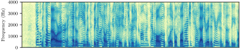
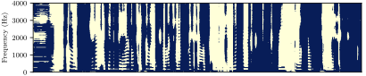
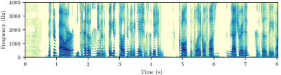
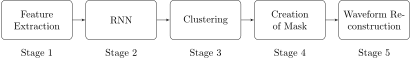

* Studying **Computer Science** at UNA
* Pursuing a MSc in **Software Engineering** at UNA, LMU and TUM
* This thesis is my first **Deep Learning** project
The Future
Source: Star Trek: The Next Generation, 5x28: Déjà Vu
The Goal
* Separating a speech mixture into its sources
- Sources belong to the same class, namely speech
- Separation is conducted blind (Unknown source count, gender, etc.)
- Separation is speaker independent
- Address the "Permutation Problem"
* Also known as the "Cocktail Party Problem"
Deep Clustering (DC)

(a) Spectrogram of a mixture in which two persons are talking.

(b) Mask for a single speaker.

Separated spectrogram, which was created by applying the mask in Figure
(b)
Source: Speech Separation using Deep Clustering, p. 20
Stages of DC

Source: Speech Separation using Deep Clustering, p. 24
Stage 1: Feature Extraction
Given $0 < n < N$ samples of a mixture
$x(n)$ and its STFT
$S(t, m)$ with $0 \le t \le \frac{N-M}{H}$ and $0 \le m \le \frac{M}{2}$ where $M$
is the window
size and $H$ the hop length,
then
$S_{pwr}(t,m)=20\log_{10}(S_+(t, m))\,\text{dB}$ with $S_+(t, m) = \max(|S(t, m)|, \epsilon)$
Stage 2: Structure of the RNN
* The RNN maps each time-frequency bin to a normalized $d$-dimensional embedding
* $n_{recurrent}$ LSTM hidden layers with $n_{hidden}$ hidden units
* single fully-connected layer with $\tanh$ as activation function
For each window the output of the network is a a matrix $V \in \mathbb{R}^{p \times d}$
where $p=(\frac{M}{2}+1) \cdot b_s \cdot \\#_w$ with batch size $b_s$ and window count $\\#_w$.
Training the RNN
* The matrix $VV^{\mkern-1.5mu\mathsf{T}} \in \mathbb{R}^{p \times p}$ is called the estimated affinity
matrix.
* The training target is the ideal affinity matrix $YY^{\mkern-1.5mu\mathsf{T}} \in \mathbb{R}^{p \times
p}$.
Pulls embeddings of the same class closer together
Pushes embeddings of the different classes apart
As the $p \times p$ can be huge a low rank representation exists:
$J(Y, V) = || V^{\mkern-1.5mu\mathsf{T}} V ||^2_F - 2 || V^{\mkern-1.5mu\mathsf{T}} Y||^2_F + ||
Y^{\mkern-1.5mu\mathsf{T}} Y||^2_F$
Stage 3: Clustering
$k$-Means is used to cluster the embedding matrix $V \in \mathbb{R}^{p \times d}$.
The loss function of $k$-means adapted to our task is
$\gamma=\sum_{i=0}^{p} \sum_{j=0}^{k} z_{ij} ||v_i - c_j||^2 = ||V-ZM||_F^2$ where
$Z \in \mathbb{R}^{p \times k}$ with $z_{ij}=\begin{cases}
1 & \text{if $v_i$ is estimated to belong to speaker $k$} \\\\
0 & \text{otherwise}
\end{cases}$ and
$M=(Y^{\mkern-1.5mu\mathsf{T}} Y)^{-1}Y^{\mkern-1.5mu\mathsf{T}} V$.
The training objective $J(Y, V)$ and the $k$-means objective $\gamma$ are small, if
$VV^{\mkern-1.5mu\mathsf{T}} \approx YY^{\mkern-1.5mu\mathsf{T}}$ which leads to $Z \approx Y$
Stage 4 and 5: Waveform Reconstruction
The matrix $Z \in \mathbb{R}^{p \times k}$ from the clustering step can be interpreted as binary mask:
$\mathrm{IBM}(t,m, j)=z_{t(\frac{M}{2}+1)+m,j}$
$\mathrm{IBM}(t,m, j)$ is 1 if speaker $j$ is active in the time-frequency bin $(t, m)$.
The spectrum of an individual speaker can be obtained by multiplying the spectrum of the mixture
with the $\mathrm{IBM}$:
$\tilde{S}_j(t,m)=\mathrm{IBM}(t,m,j) \cdot S(t,m)$
Finally, $\tilde{S}_j(t,m)$ can be inverted using the overlap-add approach which yields a discrete
speech signal $x_j(n)$.